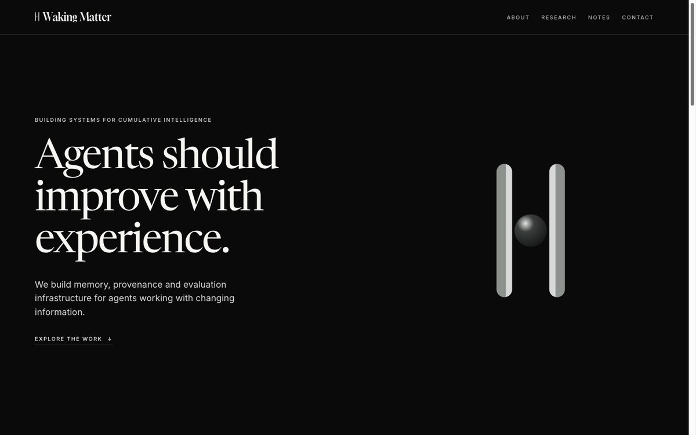
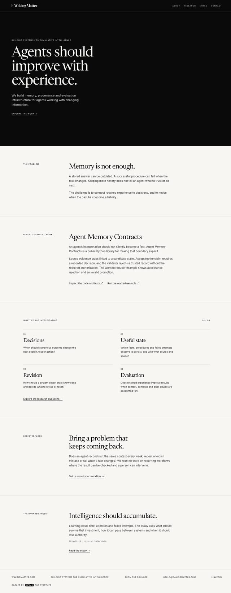

Edge cases
Where a scroll-driven page is most likely to fail, and what each direction does about it.
| Case | Risk | A | B | C | D | Check |
|---|---|---|---|---|---|---|
| Reduced motion | Scroll-linked scenes disorient, or content stays hidden | Finished two-run figure, every scene at rest | Opened frame, gates open, full ledger, no iris | Each card face in place, controls still work | Plate pinned, states switch at chapter boundaries | Verified in Chrome for all four: complete static page, console clean. |
| Phone width, 390 | Desktop choreography shrinks into illegibility | Left spine kept, four lanes stacked, weekly passes as one descending thread | Rails stay at the frame edges, 44px tick targets, legend in one column | Inline card in each scene, seven-dot state rail that names only the current state | Sticky plate at about half the viewport, legend moved under it, chips scroll sideways | No horizontal overflow from 320 to 1920 in all four. Contrast audit shows 0 failing at 390. Frames reviewed one by one at 390. A text-collision sweep from 360 to 1920 wide, plus short laptop windows such as 1366 × 625, is clean for A, B, C and D. |
| JavaScript off or fonts late | Content depends on animation | All copy is real HTML text and the animated layers are enhancement. Fonts are the site’s own files, self-hosted, with swap. | Verified for all four: every required line of copy and every link is present with JavaScript off. | |||
| Deep link or restored scroll | A scene that only works after scrolling through earlier ones | State derives from scroll position, never from history. Use any “Jump to” chip, then reload. | 62 jump landings verified (all tabs, desktop and phone frames). Reload after a jump was not tested in A, B or C. | |||
| Keyboard and screen readers | Decorative layers announced, controls unreachable | Decorative layers hidden, text equivalents for diagrams | Pillar ticks are links with focus rings | Stepper and record controls are buttons | Chips are buttons with roving tabindex; outcome switch is a radio group | Contrast audit, click-target and keyboard checks in Chrome. No screen reader pass yet. |
| Founder sign-off | New meaning attached to the brand | New microcopy, listed in the build report | The reading of the mark as memory between provenance and evaluation | Demo ids and states mirror the library; needs engineering review | Research page copy reused on the home page | Open |
| Browsers and devices | One engine tested | Chrome only. Safari, Firefox, iOS and Android have not been tested, and performance on a mid-range phone has not been measured. | Open | |||
Direction-distance gate
Every pair must differ on at least three of six dimensions, including one structural and one visual.
Who each direction serves
Design judgement, not user data. Validate with reader sessions.
| Reader | Wants | A | B | C | D |
|---|---|---|---|---|---|
| First-time visitor, investor or partner | The thesis in seconds | Strong. The hero demonstrates it. | Good. The mark explains it, abstractly. | Good. Operating the record is optional. | Partial. Text comes first, the figure rewards patience. |
| Builder evaluating the library | To see the contract work | Partial. One gate scene. | Partial. One gate. | Strong. The hero is the contract. | Good. A zoom opens a record. |
| Researcher or collaborator | Signs of rigor | Good. Four lanes, honest outcomes. | Partial. The agenda sits in four small chambers. | Good. The questions are ledger columns. | Strong. The agenda is the page. |
| Returning reader | Continuity with today’s brand | Good. New structure, same voice. | Strong. The same dark-to-ivory arc. | Partial. The interactive card is new. | Partial. No dark hero. |
Style register evidence
Each dial is tied to something observed or stated. One entry is an assumption.
| Dial | Value | Source | Evidence | Consequence for the design |
|---|---|---|---|---|
| Energy | Medium-low | Explicit | “It’s a serious business and it’s an AI lab.” The live site has a single 0.9 s rise. | Motion only where it encodes an idea. One traveling element. No loops. |
| Finish | High | Baseline | Newsreader at 400 with −0.035em tracking, hairlines, mono labels. The brief asks to do better than the references. | Type and real diagrams carry the page. No illustration. |
| Density | Low | Baseline | 72rem content width, 38em measure, 6.5rem band padding. | One idea per viewport. Copy holds the site’s measure. |
| Weight | Low | Baseline | Serif at 400, 1px hairlines, 11px uppercase labels. | Contrast comes from ground and scale, not weight. |
| Seriousness | High | Explicit | The same brief quote. The site’s own caveats: “not results we are claiming here.” | No bounce, emoji or hype. Every demonstration is labelled illustrative. |
| Resonance | One meaning | Assumption | The live site defines the colour but gives no rule for it. | Used only when retained experience changes a later decision. Needs founder confirmation. |
How to backfill missing evidence
Nothing here blocks the review. Each gap limits how far the ratings above can be trusted.
| Gap | Why it matters | How to backfill |
|---|---|---|
| Analytics | There is no baseline for what visitors do today. | Ask for home page analytics: entry sources, scroll depth, clicks on the hello@ link. Pick one success measure before choosing a direction. |
| User research | The reader ratings are design judgement. | Five short sessions per shortlisted direction: first impression (“what does this lab do?”), then find the library. |
| Founder input | B’s reading of the mark and all new microcopy are proposals. | A short review of the copy list and the mark reading. |
| Engineering | Performance and browser coverage are unmeasured. | Measure on a mid-range Android phone and in Safari and Firefox before committing to a build. |
| Accessibility | Only automated and keyboard checks so far. | A screen reader pass (VoiceOver, NVDA) and a contrast audit of the small muted labels on the dark grounds. |